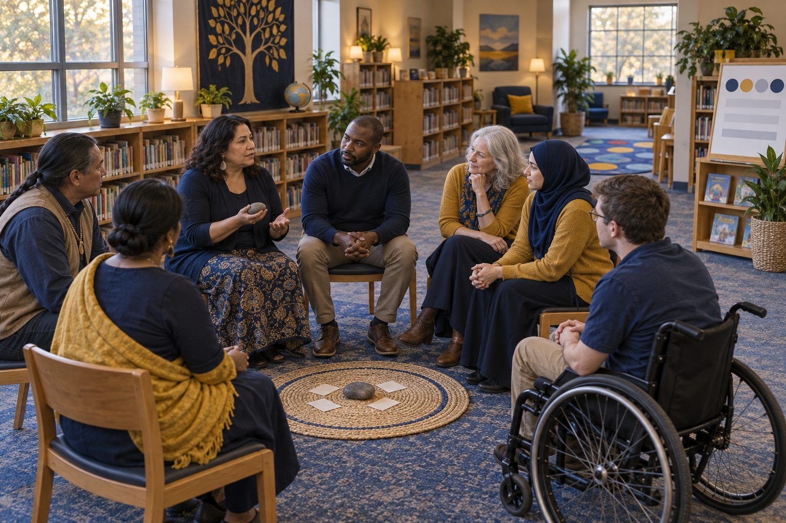

Aprendizaje profesional · Docentes, Bibliotecarios · 60 minutos
Círculos, no pantallas: relaciones en un aula digital
Los maestros participan en un círculo comunitario real sobre chats grupales, compañeros de IA y el sueño; luego planean su propio círculo, crean acuerdos en conjunto y ensayan qué decir cuando un estudiante les cuenta que algo salió mal en línea.
La vida social de los estudiantes ahora pasa por chats grupales, videojuegos, fotos compartidas y, para algunos, chatbots de IA que funcionan como compañeros; sin embargo, esa vida rara vez entra al aula hasta que algo sale mal. Un círculo comunitario es una estructura sencilla y sin dispositivos que abre espacio para hablar de la vida en línea antes de que se convierta en una crisis. En esta sesión, los maestros primero se sientan en un círculo como si fueran estudiantes; luego eligen y adaptan preguntas según el nivel de grado, convierten las necesidades del círculo en acuerdos y ensayan los primeros dos minutos después de que un estudiante revela un problema en línea. Salen con un primer círculo planeado y una nota breve que invita a las familias a la conversación.
En este paquete
- Hoja A: Tarjetas de preguntas para el círculo (tarjetas para recortar)
- Hoja B: Cuando un estudiante le cuenta algo (lectura)
- Hoja C: Planificador de mi primer círculo (hoja de trabajo)
- Clave del facilitador (última página)
Indicadores ELE de TCEA
- T4.1 Sé cómo fomentar relaciones positivas con mis estudiantes.
- T4.3 Soy consciente de la importancia del apoyo emocional para el éxito académico.
- T4.2 Puedo crear oportunidades de colaboración y aprendizaje entre pares para los estudiantes.
- T3.1 Sé cómo crear un ambiente acogedor en el salón de clases para todos los estudiantes.
- L5.1 Sé cómo construir alianzas digitales sólidas con las familias y las organizaciones de la comunidad.
Guía completa para el facilitador: mglearn.github.io/eles/es/activities/circles-not-screens.html
Hoja A de Círculos, no pantallas: relaciones en un aula digital
Tarjetas de preguntas para el círculo
Recórtelas y ordénelas por nivel de grado. Los reversos son notas para el facilitador sobre qué escuchar; imprímalos en una hoja aparte.
Página 1 de 2
K–2 · Saludo inicial
Si lo que sientes hoy fuera el clima, ¿cómo sería? Puedes señalar un dibujo.
K–2 · Equilibrio
Cuenta algo divertido que hiciste en una pantalla y algo divertido que hiciste sin ninguna pantalla.
3–5 · Conexión
¿Qué juego o programa te gusta y con quién te gusta disfrutarlo?
3–5 · Equilibrio
¿Cómo sabes cuándo es hora de dejar un dispositivo? ¿Qué te ayuda a parar?
6–8 · Chats grupales
¿Qué es algo que los chats grupales hacen bien y algo que hacen mal? No uses el nombre de nadie.
6–8 · Tono
¿Alguna vez has visto que alguien malinterprete un mensaje? ¿Qué pasó después?
6–12 · Compañeros de IA
Algunas personas hablan con chatbots de IA cuando están aburridas, estresadas o solas. ¿Por qué alguien haría eso? ¿Qué no te puede dar un chatbot que sí te puede dar una persona?
9–12 · Sueño
¿Con qué compite el sueño en tu vida? ¿Qué es algo que te ha ayudado a protegerlo?
Hoja A de Círculos, no pantallas: relaciones en un aula digital
Tarjetas de preguntas para el círculo
Recórtelas y ordénelas por nivel de grado. Los reversos son notas para el facilitador sobre qué escuchar; imprímalos en una hoja aparte.
Página 2 de 2
9–12 · Sentirse comprendido
¿Qué es algo que te gustaría que un adulto entendiera sobre tu vida en línea y que los adultos suelen entender mal?
Todos los grados · Pertenencia
¿Quién es alguien, en línea o fuera de línea, que te hace sentir que perteneces? ¿Qué hace?
Todos los grados · Hogar
¿Qué regla sobre la tecnología en tu casa te parece que tiene sentido? Puedes pasar.
Todos los grados · Cierre
Una palabra que describa cómo te vas del círculo.
Hoja B de Círculos, no pantallas: relaciones en un aula digital
Cuando un estudiante le cuenta algo
Lea las acciones de respuesta y luego ensaye los escenarios en tríos. Todo esto se enmarca en las políticas de su distrito; el procedimiento de su plantel siempre va primero.
1Las acciones de respuesta. (1) Agradezca: "Me alegra mucho que me lo hayas contado." (2) Escuche sin interrogar. Deje que lo cuente a su manera; pregunte solo lo necesario para saber si está a salvo. (3) No prometa guardar el secreto. "No puedo guardar esto solo entre nosotros, porque mi trabajo es mantenerte a salvo, pero te voy a decir con quién voy a hablar." (4) No pida ver, recibir ni guardar imágenes o mensajes, sobre todo ninguna imagen de un estudiante. Anote lo que le dijo con sus propias palabras. (5) Diga qué pasará después y cuándo volverá a hablar con el estudiante. (6) Siga el procedimiento de su plantel ese mismo día: su consejero, un administrador y, cuando haya abuso o peligro, su obligación legal como informante obligatorio.
2Lo que no debe hacer. No confronte a los otros estudiantes involucrados, no le quite el teléfono al estudiante, no publique nada al respecto y no maneje solo una inquietud de seguridad porque parece pequeña. Lo pequeño a menudo resulta no serlo.
3Escenario 1 (modelado por el facilitador). Un estudiante de cuarto grado se queda después del círculo: "Alguien en mi juego me pregunta todo el tiempo dónde vivo. Dijo que tiene 11 años, pero habla como un adulto. No le dije. ¿Estoy en problemas?"
4Escenario 2. Una estudiante de séptimo grado dice en voz baja: "Hay un chat grupal donde se burlan de la voz de Jaylen. Yo estoy en él. No dije nada, pero tampoco me salí. Me siento muy mal por eso."
5Escenario 3. Un estudiante de décimo grado, alterado: "Alguien compartió una foto mía de una pijamada. Es vergonzosa, y ahora está por todas partes. ¿Puede verla y decirme qué tan grave es?"
6Escenario 4. Una estudiante de octavo grado después de la pregunta sobre compañeros de IA: "La verdad, el chatbot es con el único con quien de verdad hablo. Me entiende mejor que la gente. Está bien, no es para tanto."
7Qué debe observar el observador. ¿El maestro le agradeció al estudiante? ¿Mantuvo la calma y escuchó? ¿Evitó prometer guardar el secreto? ¿Se negó a ver la imagen en el Escenario 3 sin perder la calidez? ¿Nombró un siguiente paso real y a una persona real? ¿Dejó al estudiante con la sensación de que hizo bien en contarlo?
8Después del ensayo, anote: a quién contacta en su plantel, cómo se comunica con esa persona y qué indica el procedimiento de su distrito que debe documentar. Si no lo sabe, averiguarlo es su primera tarea de transferencia.
Hoja C de Círculos, no pantallas: relaciones en un aula digital
Planificador de mi primer círculo
Planee un círculo de 15 minutos que dirigirá en las próximas dos semanas y luego redacte la nota que irá a casa.
Grado y clase, y cuándo se hará el círculo (día, hora, con qué frecuencia):
Apertura y pregunta del saludo inicial (y cómo empezará usted primero):
Una pregunta central sobre la vida en línea, adaptada. ¿A quién incluye su adaptación y cómo (idioma, apoyo visual, opción sin dispositivo, una forma de responder sin hablar)?
Cuatro o cinco acuerdos del círculo en lenguaje de estudiantes, incluido el límite de la confidencialidad:
Si un estudiante revela que algo salió mal en línea: mi contacto en el plantel, cómo me comunico con esa persona y qué documento:
Nota para las familias (tres oraciones): de qué hablaremos, una invitación a compartir un acuerdo sobre tecnología del hogar y una forma no digital de responder:
Solo para el facilitador: Círculos, no pantallas: relaciones en un aula digital
Clave de respuestas y notas
Hoja A: Tarjetas de preguntas para el círculo
- K–2 · Saludo inicial
- Una apertura universal. Las tarjetas con imágenes permiten que todos los niños respondan, incluidos los que están aprendiendo inglés o aún no están listos para hablar.
- K–2 · Equilibrio
- Escuche en busca de equilibrio, no de reglas. Las familias tienen distintas reglas sobre las pantallas; nunca compare ni elogie las reglas de un hogar por encima de las de otro.
- 3–5 · Conexión
- Crea conexión. Si un estudiante menciona a un amigo solo de internet que nunca ha conocido en persona y que le pide cosas, hable con él en privado después, no en el círculo.
- 3–5 · Equilibrio
- Los estudiantes suelen nombrar a una persona (mamá, papá, un hermano mayor) o una rutina. Reúna sus estrategias; convencen más a sus compañeros que las suyas.
- 6–8 · Chats grupales
- Esté atento a la exclusión, las capturas de pantalla compartidas sin permiso y los ataques en grupo. La regla de no usar nombres es lo que mantiene esto seguro para toda la clase.
- 6–8 · Tono
- Abre la idea de que el tono desaparece en el texto. Es un buen puente para crear en conjunto normas para los foros de discusión de la clase.
- 6–12 · Compañeros de IA
- Manténgalo en tercera persona y no avergüence a nadie. Los estudiantes pueden decir que un chatbot siempre está disponible y nunca juzga. Reconózcalo y luego pregunte qué puede hacer un amigo o un adulto de confianza que el chatbot no puede.
- 9–12 · Sueño
- Evite sermonear. Las estrategias de los propios estudiantes (cargar el teléfono fuera del cuarto, un toque de queda para el chat grupal) tienen peso. Fíjese en quién se ve agotado y hable con esa persona en privado.
- 9–12 · Sentirse comprendido
- Escuche, no se defienda. Esta pregunta le da la información más útil que obtendrá en todo el semestre sobre la vida de los estudiantes.
- Todos los grados · Pertenencia
- Muestra cómo se ve la pertenencia para sus estudiantes. Sus respuestas son una lista de verificación para su propia aula.
- Todos los grados · Hogar
- Respeta las distintas normas familiares. Algunos estudiantes no tienen reglas sobre dispositivos y otros no tienen dispositivos; reciba ambas respuestas sin comentarios.
- Todos los grados · Cierre
- Cierre siempre. Una ronda de cierre marca el final del momento de compartir y ayuda a los estudiantes a volver al trabajo académico.